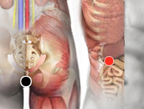

Levaduras
Pares
ano - píloro
paravertebral - paravertebral

Generalidades:
Síntomas gastrointestinales: dolor abdominal, distensión, diarrea, gastritis, colitis.
Las levaduras son hongos con prediminio unicelular en la mayor parte de su fase de vida. Existen gran variedad de especies. Se caracterizan por su capacidad de descomposición de sustancias orgánicas a través de procesos de fermentación.
Transmisión
Por alimentos contaminados.